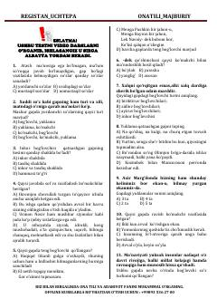

YSO'zbek tili yordamchi so'zlari bo'yicha testlar to'plami.
Ushbu qo'llanma o'zbek tilidagi yordamchi so'z turkumlari (ko'makchi, bog'lovchi va yuklamalar) bo'yicha test savollari va mashqlarni o'z ichiga oladi. Material ona tili va adabiyot fanidan bilimlarini mustahkamlash va imtihonlarga tayyorgarlik ko'rish istagida bo'lgan o'quvchilar uchun mo'ljallangan.